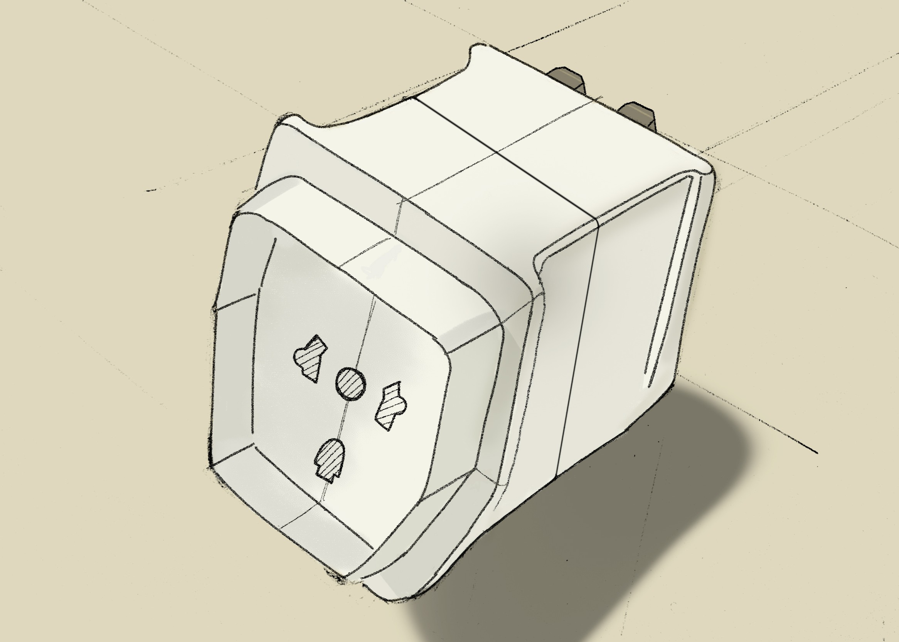
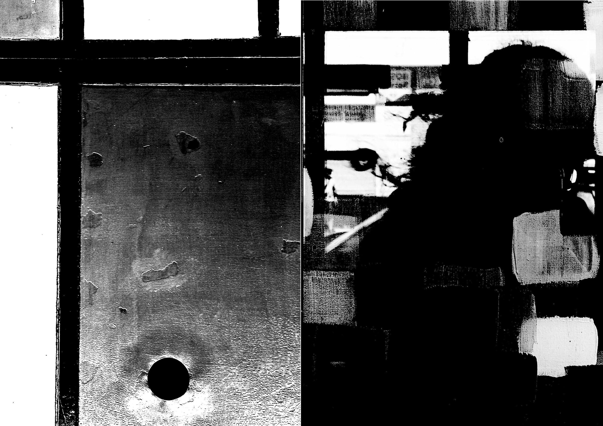
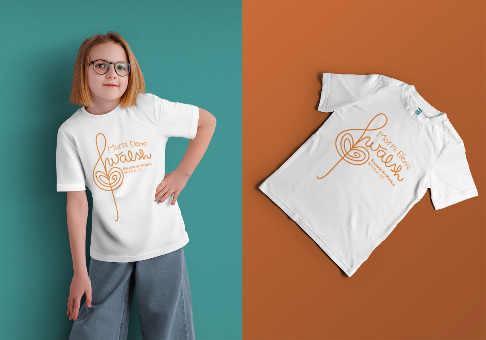
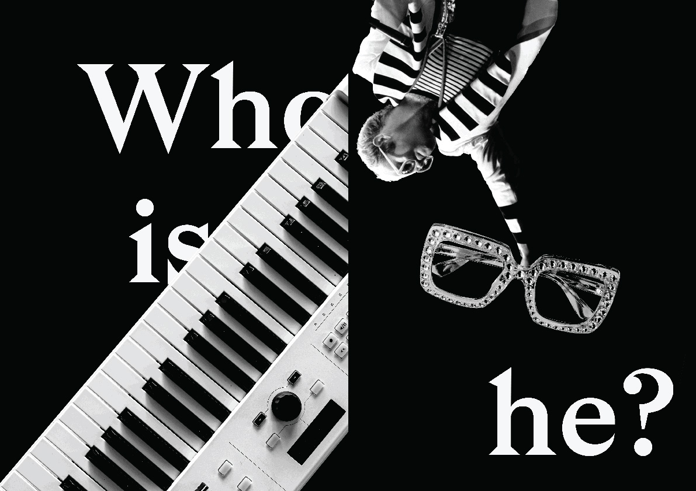
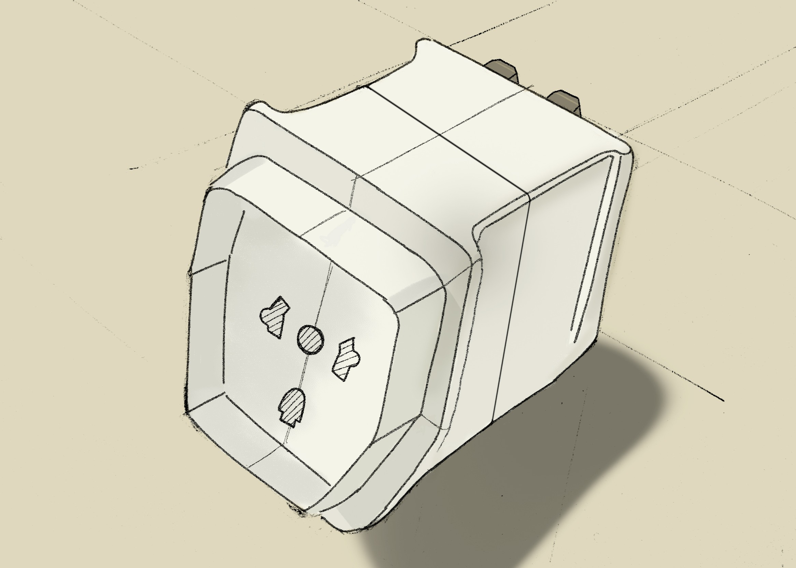
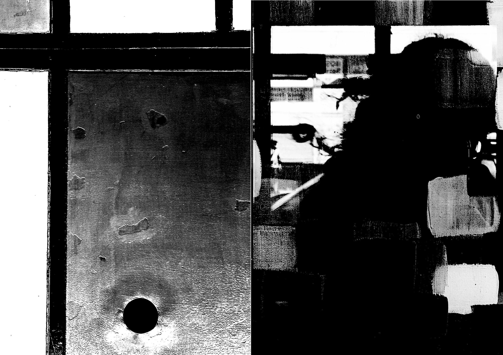
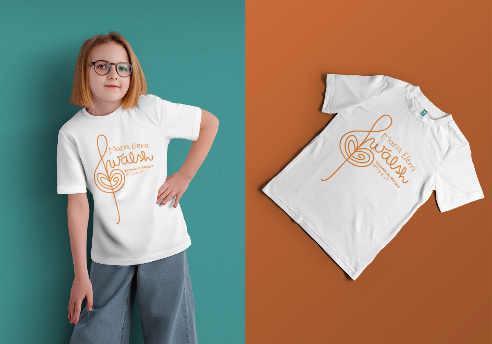
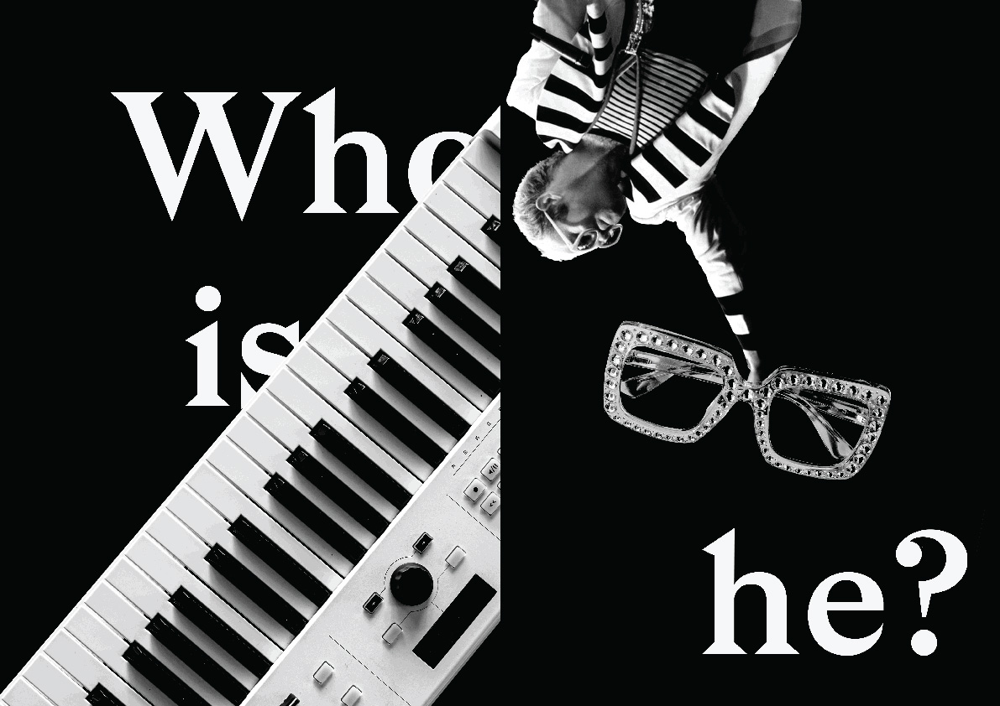

Portfolio
 







Servicios
Modelado 3D y Renderizado
Visualizá productos, espacios o ideas de forma realista. Ideal para presentar proyectos con impacto visual, antes de construir, fabricar o lanzar una propuesta al público.
Impresión 3D
Transformá diseños digitales en objetos físicos. Ideal para prototipos, piezas únicas o productos personalizados. Usamos tecnología de precisión para crear modelos tangibles en distintos materiales, formas y escalas.
Sketching
Visualizá ideas de forma rápida y clara mediante dibujos a mano. Es ideal para explorar conceptos, comunicar propuestas y definir estilos antes de pasar al diseño digital o producción.
Storytelling
Combiná imágenes, palabras y ritmo narrativo para contar ideas, marcas o proyectos de forma clara y emocional. Ideal para conectar con el público y dar sentido visual a cada propuesta.
Diseño Gráfico
Traducí ideas en imágenes atractivas y funcionales. Creamos piezas visuales que comunican con claridad y estilo: desde logos y flyers hasta contenido digital, cuidando cada detalle para lograr impacto y coherencia.
Contacto
¿Querés que trabajemos juntos?Escribimey contame tu idea. Más proyectos enBehance